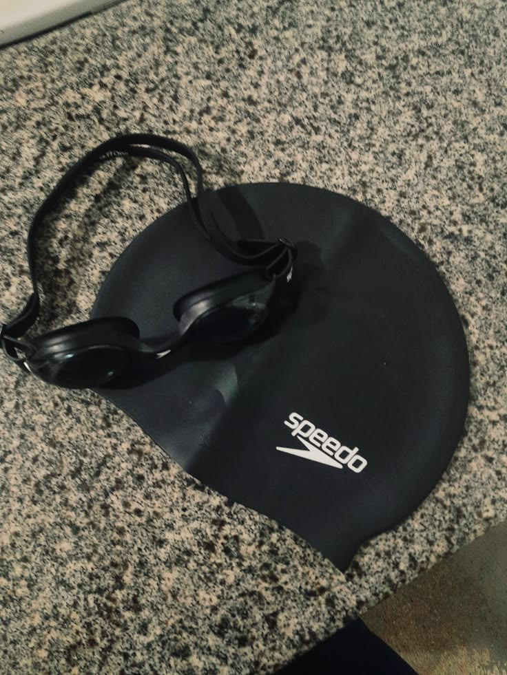
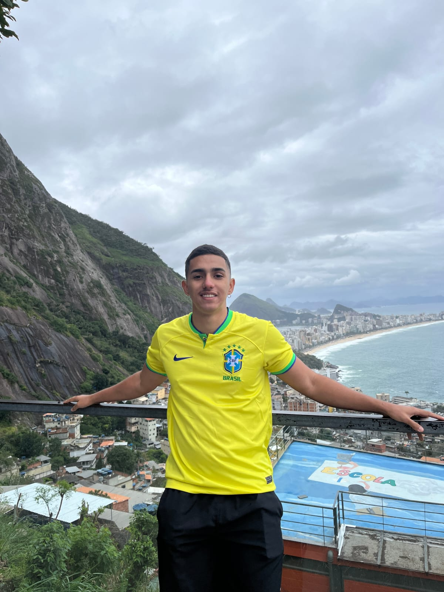
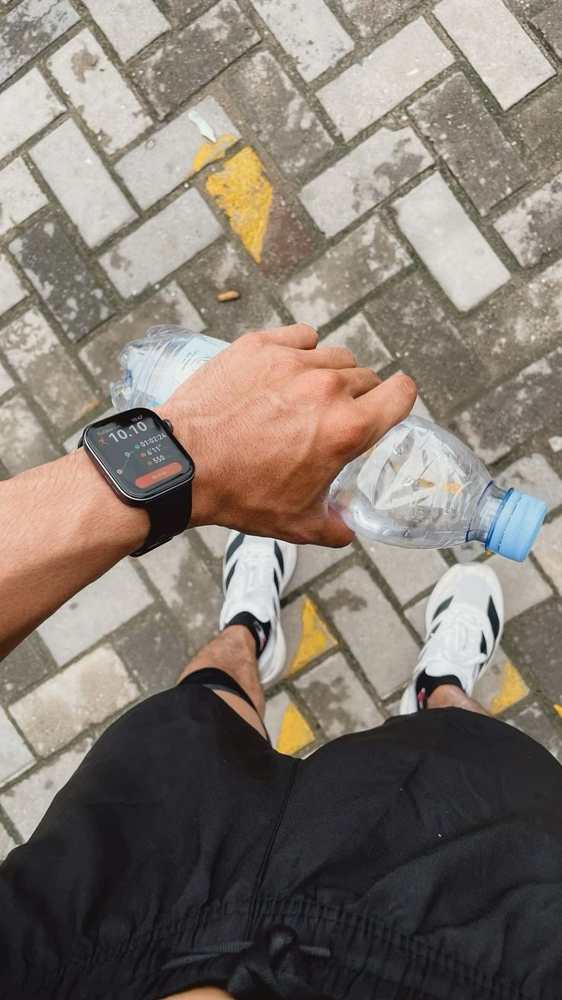
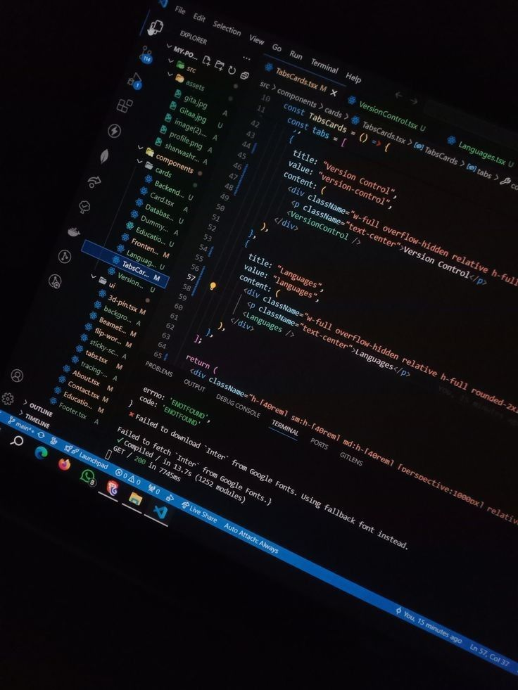
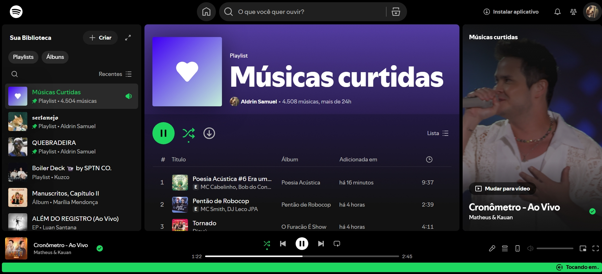
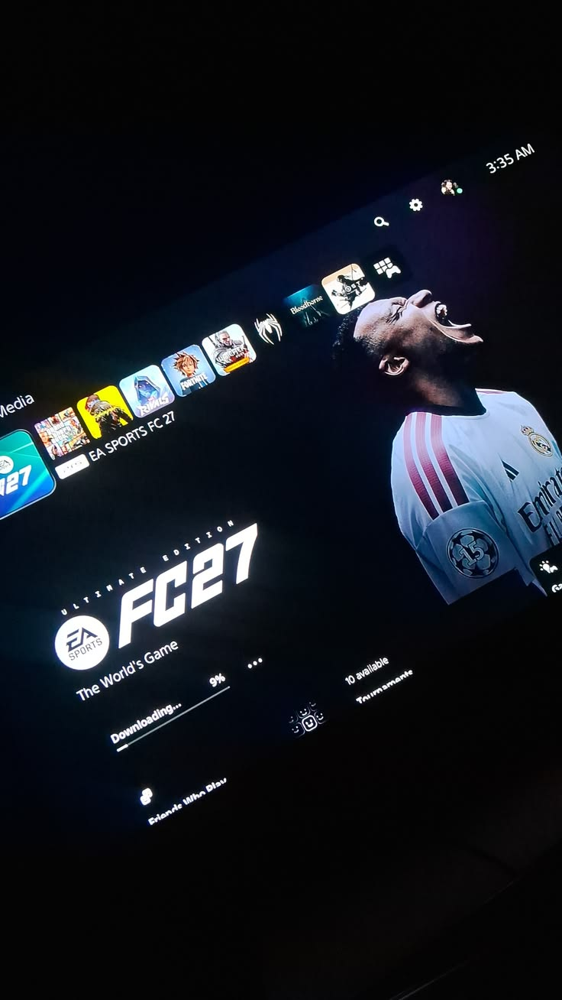
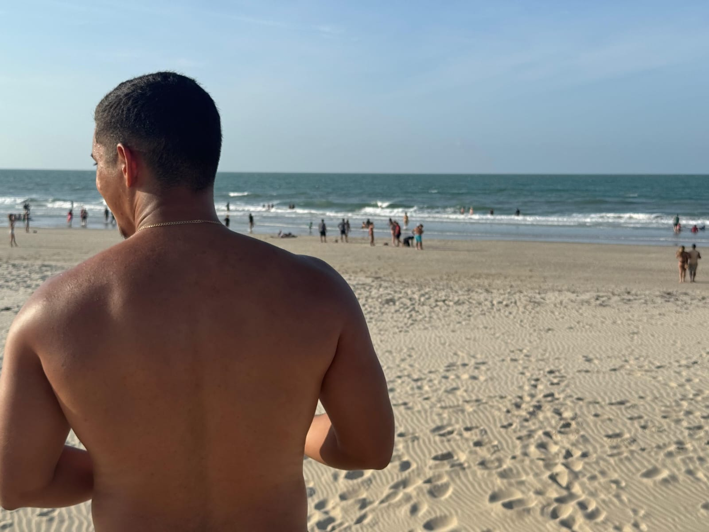
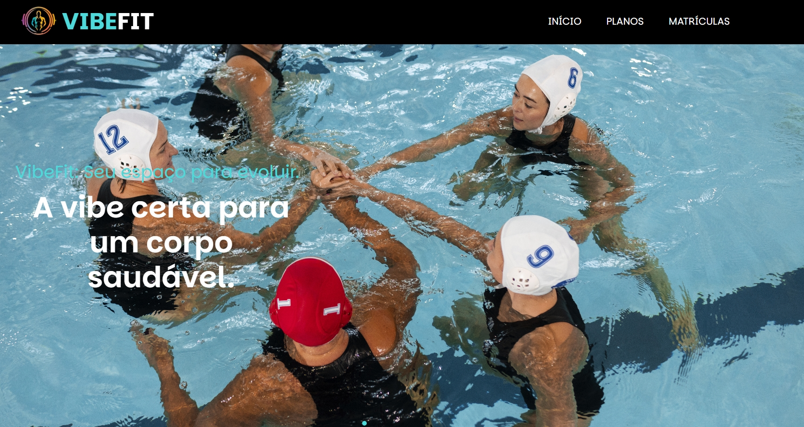
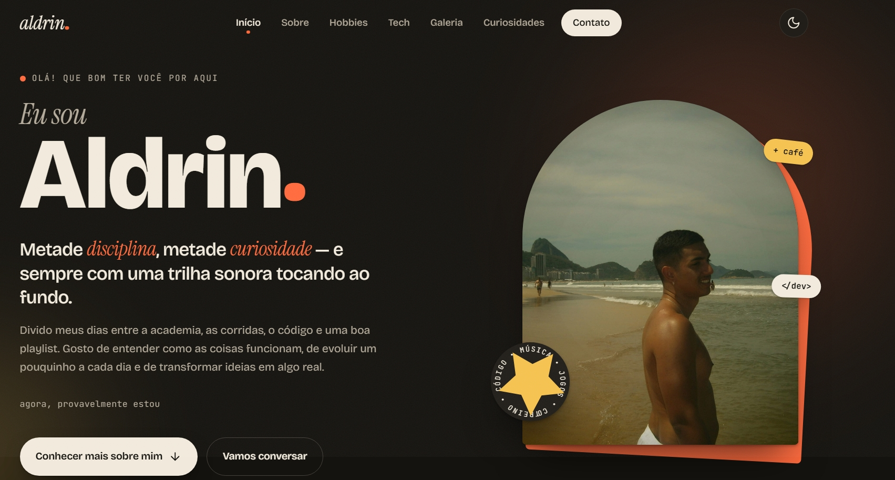

Musculação & Natação
Meu momento de desligar o mundo. Treinar me ensinou paciência, rotina e que todo progresso começa pequeno.
Olá! Que bom ter você por aqui
Metade disciplina, metade curiosidade — e sempre com uma trilha sonora tocando ao fundo.
Divido meus dias entre a natação, as corridas, programação e uma boa playlist. Gosto de entender como as coisas funcionam, de evoluir um pouquinho a cada dia e de transformar ideias em algo real.
agora, provavelmente estou levantando peso

Não sou uma pessoa de uma coisa só — e acho que é justamente isso que torna a vida interessante.
Minha história é feita de fases: teve a fase de passar horas em jogos, a fase de descobrir que dava para criar as coisas que eu usava no computador, e a fase em que entendi que cuidar do corpo também é cuidar da cabeça.
Hoje tento equilibrar tudo isso. De manhã pode ser treino, à tarde estudo, à noite um projeto pessoal com fone no ouvido. Tenho um lado competitivo (principalmente comigo), mas levo a vida com leveza e bom humor.
Foi nos jogos que nasceu a curiosidade de entender o que acontecia por trás da tela.
A primeira linha que funcionou (depois de muitas que não) e a sensação de criar algo do zero.
A natação virou hábito e trouxe uma lição para tudo: constância vale mais que intensidade.
Estudando, criando projetos e me preparando para crescer na área de tecnologia.
As coisas que ocupam meu tempo livre (e boa parte da minha cabeça).

Meu momento de desligar o mundo. Treinar me ensinou paciência, rotina e que todo progresso começa pequeno.

Tênis no pé, fone no ouvido e a cabeça organizando as ideias a cada quilômetro.

Gosto de quebrar a cabeça com um problema até ele virar código funcionando.

Tem playlist para treinar, para focar, para relaxar… e para cantar alto quando ninguém está ouvindo.

Uma boa partida de fifa com amigos, uma série nova ou aquele filme que todo mundo já viu (menos eu).

Viagens, PRAIAS, culinária, fotografia… sempre tem espaço para um novo interesse entrar nessa lista.
Tecnologia é mais que estudo para mim: é onde eu gosto de construir coisas. Clique em uma linguagem para ver um trechinho.
Comecei pela curiosidade e fiquei pela sensação de ver algo que eu escrevi ganhar vida. Hoje estudo desenvolvimento de software com foco em lógica, back-end e web, sempre tentando entender o porquê das coisas, e não só o como.

Cadastro de alunos, modalidades e matrículas com controle de mensalidades, usando orientação a objetos e banco de dados relacional.

Feito do zero com HTML, CSS e JavaScript puro — tema escuro, galeria, animações e tudo mais.
Recortes de dias bons. Clique em qualquer foto para ampliar.
Pequenos fatos que não cabem num currículo. Toque nos cards para descobrir.
Fim da página, começo da conversa
Valeu por chegar até aqui. Se você curte treino, tecnologia, música ou só quer dizer um oi, me chama — eu sempre respondo.